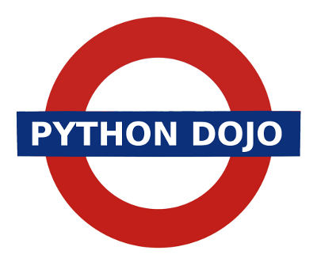

How to Run an Awesome Code Dojo

Alistair Roche recently tweeted the following question:
@ntoll Hey Nicholas, any chance I could get some advice from you on how to run an awesome coding dojo?
This blog post is my answer.
I helped start the London Python Code Dojo with Jonathan Hartley and Bruce Durling because I was learning Python and wanted to meet people I could learn from. Therein lies the essence of the dojo: a place to learn with/from other people.
The original dojo concept is explained at the codingdojo.org website. We started out with every intention of following the instructions. However, we've let our imaginations run and evolved the meetings to our group's dynamics and interests. If you run a dojo, so should you too (adapt).
Whereas codingdojo.org is quite formal and focussed on test-driven development (TDD) we have changed things in three major ways:
- expand the pair programming "randori" to encompass groups of no more than five participants
- drop the TDD dogma, and
- encouraged noise, debate and creativity.
Working in groups was suggested by Ciarán and makes the dojo a software version of Scrapheap Challenge. Every group is given about an hour and a half to solve the same problem, at the end of the evening each group does a show and tell which ends up being a public code review cum question and answer session.
Although I practice TDD I personally dislike pushing any "one true" methodology on people. There are times when TDD is the worst thing to do (I'll explain why in another blog post) and I personally feel it's important to let people discover so-called good practice for themselves by observing it in use rather than being told to do it.
It soon became clear that encouraging noise, debate and "creativity" leads to a buzz in the room and lots of energetic intellectual interaction between participants. I once overheard someone (it might have been Tom Viner but I might be wrong) explain that the London Python code dojo is to the original dojo concept as an improvisation in a jazz club is to a string quartet recital.
So here's the London dojo recipe:
- We limit the number of tickets to around thirty to make the evening easier to manage (it's like herding cats).
- Start with a social element. For us it's pizza and beer. Not only is it a good way to welcome new members but it is also a great community building mechanism. Several people have found jobs via the connections made in the pre-code social.
- During the social element we encourage people to write ideas for the evening's problem on a white/black-board or flip chart. Good ideas are usually algorithmic in nature and very specific. Recent examples include:
- Game solving algorithms: Boggle, Mastermind and Tic-Tac-Toe.
- Creating a simple game: Hunt the Wumpus clone.
- Problem solving: Maze navigation.
- An adventure game where each month we create a new aspect of the game: world representation, parser, keeping game state, puzzles and so on.
- The "organiser" convenes the coding session by calling for a vote on the problems suggested during the social part of the evening. We usually work out the top three ideas then take a second vote to decide a winner.
- The "organiser" randomly assigns everyone a group.
- There follows one and a half hours of furious coding with the organiser calling out half-hour intervals.
- Finally, once the time is up every group does a show and tell where we need to see their code running (or not as the case may be) followed by a code review. For me, this is the best (and funniest) part of the evening.
If you want to know more, come to a dojo! Alternatively, you may be interested in the slides from a presentation I gave at Europython in 2011 on running the code dojo:
Last, but definitely not least, many thanks to my co-dojo-cat-herders Tom Viner, Tim Golden, Jonathan Hartley and Bruce Durling